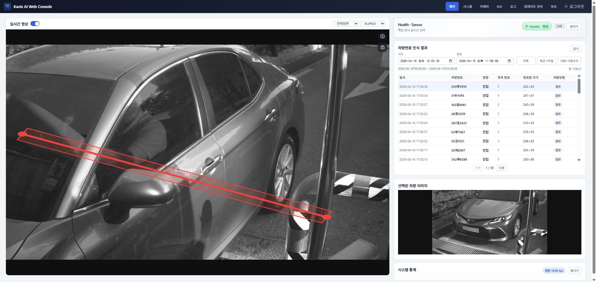
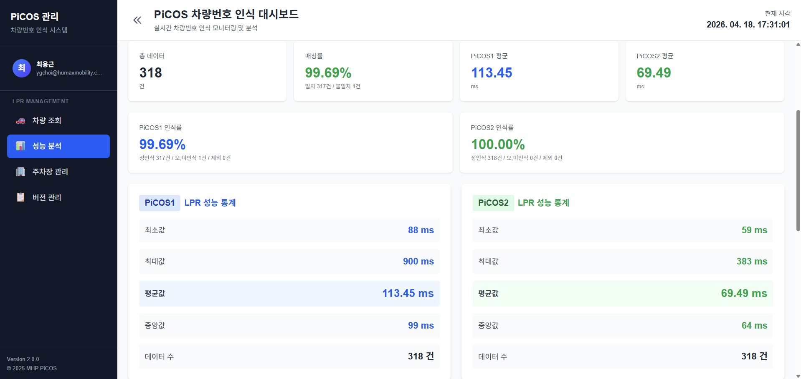

AI Vision Engineer
13년 차 영상처리·LPR 전문가
AI-Loopless 시스템(Kavix)을 1인 개발·상용화
물리 센서 완전 제거 + 스마트 주차장 운영 비용 대폭 절감
스마트 주차장 AI Vision 전문가
단순 구현이 아닌 "스마트 주차장 운영 비용을 어떻게 줄일 것인가"부터 고민하는 개발자입니다.
AI-Loopless 시스템이 아직 시장에 없던 시점에 Kavix를 1인 개발·상용화하여 물리 루프센서를 완전히 제거하고, 설치·유지보수 비용을 대폭 절감하면서도 99.9% 검지율을 달성했습니다.
동시에 외산 LPR 엔진 의존에서 벗어나 독자 PiCOS2 엔진을 개발하여 인식률·처리속도·환경 호환성을 혁신적으로 끌어올렸습니다.
스마트 주차장 AI Vision 혁신 사례
시장에 AI-Loopless가 존재하지 않던 시점에 1인 개발·상용화

YOLO Bounding Box 한계 극복 → Affine Transformation 직접 추정
